Code
library(tidyverse)
library(palmerpenguins)
# Create a base plot to use throughout examples
base_plot <- penguins %>%
ggplot(aes(x = bill_length_mm, y = bill_depth_mm, color = species)) +
geom_point()Understanding theme() elements is crucial for creating polished visualizations in ggplot2. This guide provides a detailed exploration of theme customization.
There are five main types of theme elements:
element_text(): For text customizationelement_line(): For line customizationelement_rect(): For rectangular elementselement_blank(): To remove elementsunit(): For specifying sizesbase_plot +
labs(title = "Penguin Bill Dimensions",
subtitle = "Exploring the relationship between length and depth",
caption = "Data: palmerpenguins package") +
theme(
# Plot title
plot.title = element_text(
size = 16, # Text size
face = "bold", # Bold face
color = "navy", # Text color
hjust = 0.5, # Center horizontally
margin = margin(b = 10) # Bottom margin
),
# Subtitle
plot.subtitle = element_text(
size = 12,
face = "italic",
color = "gray30",
margin = margin(b = 15)
),
# Caption
plot.caption = element_text(
size = 8,
face = "plain",
color = "gray50",
hjust = 1 # Right-align
)
)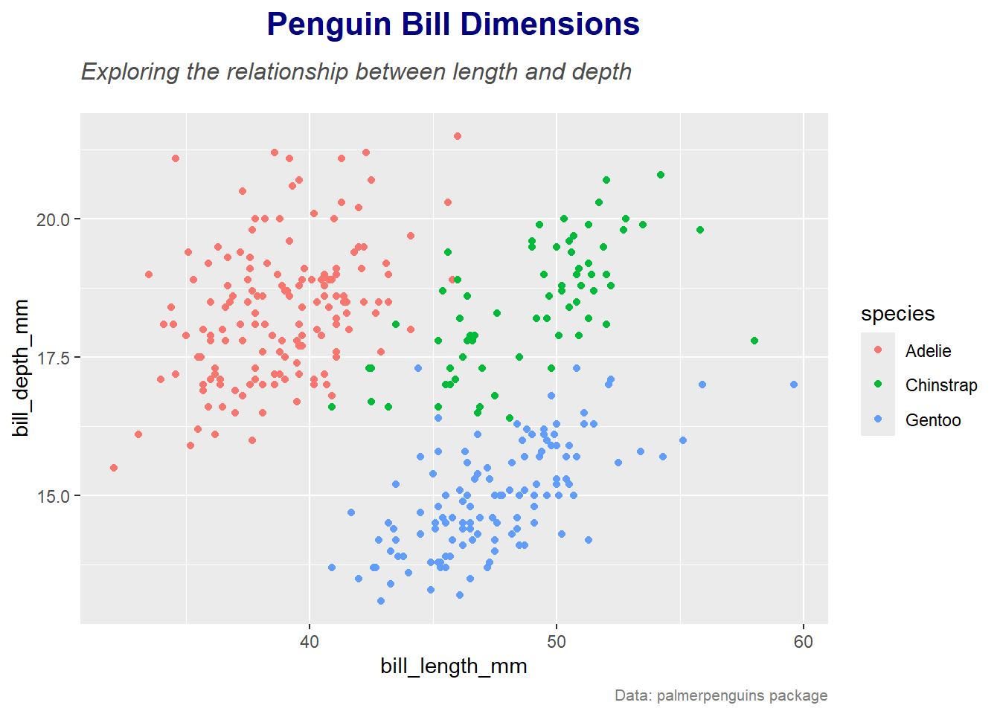
base_plot +
theme(
# Axis titles
axis.title.x = element_text(
size = 12,
face = "bold",
margin = margin(t = 10) # Top margin
),
axis.title.y = element_text(
size = 12,
face = "bold",
angle = 90, # Vertical text
margin = margin(r = 10) # Right margin
),
# Axis text (tick labels)
axis.text.x = element_text(
angle = 45, # Angled text
hjust = 1, # Right-align
color = "darkblue",
size = 10
),
axis.text.y = element_text(
hjust = 1, # Right-align
color = "darkblue",
size = 10
)
)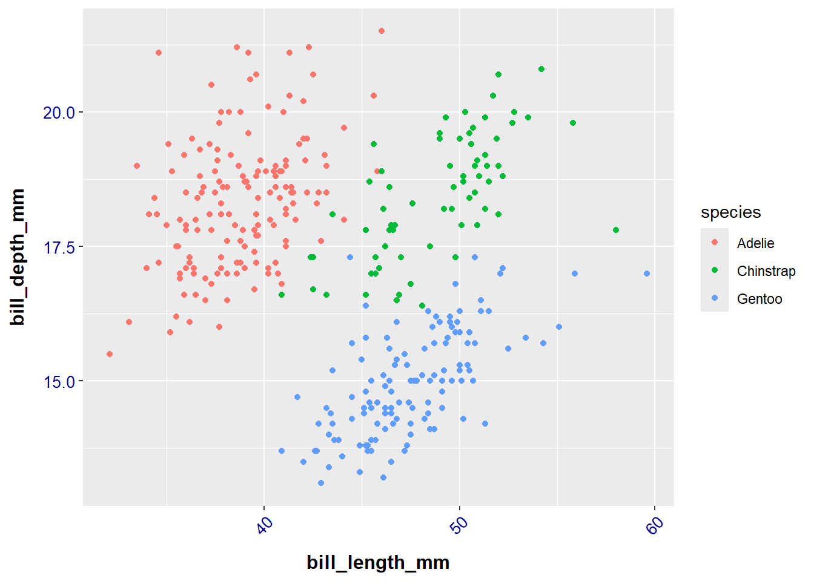
base_plot +
theme(
# Major grid lines
panel.grid.major = element_line(
color = "gray80",
linewidth = 0.5,
linetype = "dashed"
),
# Minor grid lines
panel.grid.minor = element_line(
color = "gray90",
linewidth = 0.25,
linetype = "dotted"
),
# Remove vertical grid lines
panel.grid.major.x = element_blank(),
panel.grid.minor.x = element_blank()
)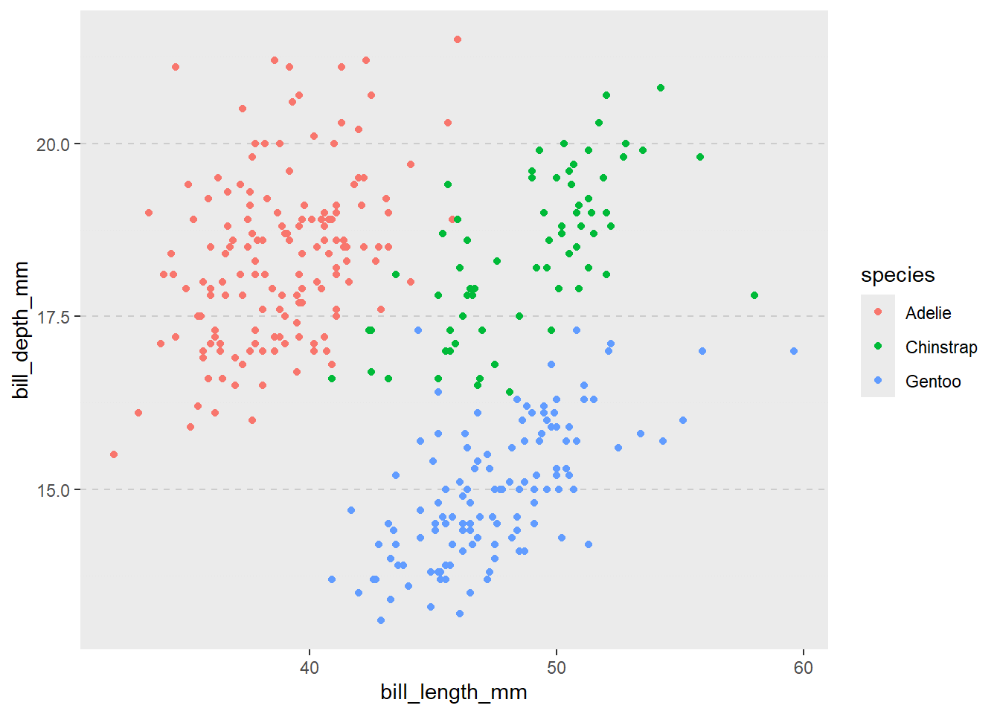
base_plot +
theme(
# Panel background
panel.background = element_rect(
fill = "gray95",
color = "black",
linewidth = 1
),
# Plot background
plot.background = element_rect(
fill = "white",
color = "gray80",
linewidth = 2
),
# Legend background
legend.background = element_rect(
fill = "white",
color = "gray80",
linewidth = 0.5
)
)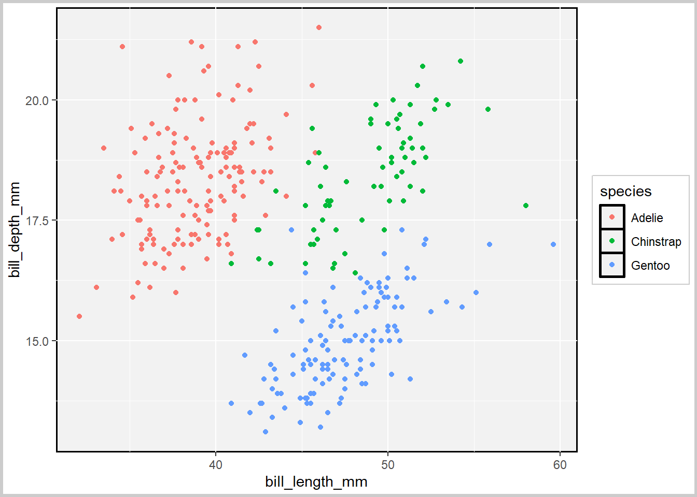
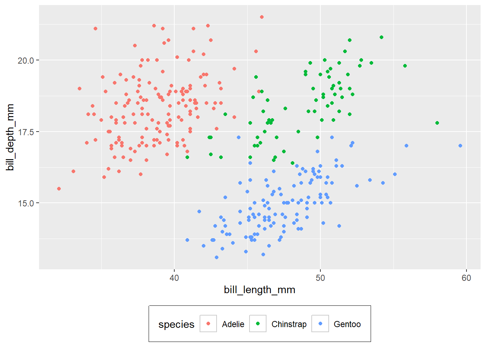
theme_publication <- function(base_size = 12) {
theme_minimal(base_size = base_size) %+replace%
theme(
# Text elements
plot.title = element_text(
size = base_size * 1.3,
face = "bold",
margin = margin(b = 15)
),
plot.subtitle = element_text(
size = base_size * 1.1,
margin = margin(b = 10)
),
axis.title = element_text(
size = base_size,
face = "bold"
),
axis.text = element_text(
size = base_size * 0.8,
color = "gray30"
),
# Grid elements
panel.grid.major = element_line(
color = "gray90",
linewidth = 0.5
),
panel.grid.minor = element_blank(),
# Legend elements
legend.title = element_text(
size = base_size,
face = "bold"
),
legend.text = element_text(
size = base_size * 0.8
),
legend.position = "bottom",
# Spacing
plot.margin = margin(20, 20, 20, 20),
# Background
panel.background = element_rect(
fill = "white",
color = NA
),
plot.background = element_rect(
fill = "white",
color = NA
)
)
}
# Apply the theme
base_plot +
labs(title = "Penguin Bill Dimensions",
subtitle = "Exploring morphological variation across species",
caption = "Data: palmerpenguins package") +
theme_publication()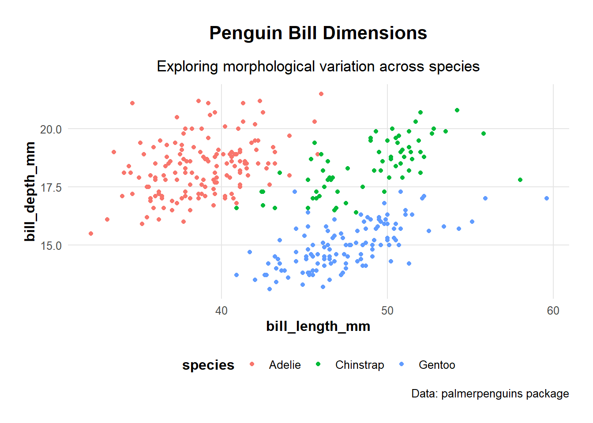
# Problem: Text getting cut off
problematic_plot <- base_plot +
labs(title = "Very Long Title That Might Get Cut Off") +
theme(plot.margin = unit(c(0, 0, 0, 0), "pt"))
# Solution: Add adequate margins
fixed_plot <- base_plot +
labs(title = "Very Long Title That Might Get Cut Off") +
theme(plot.margin = margin(t = 20, r = 20, b = 20, l = 20))
# Compare
problematic_plot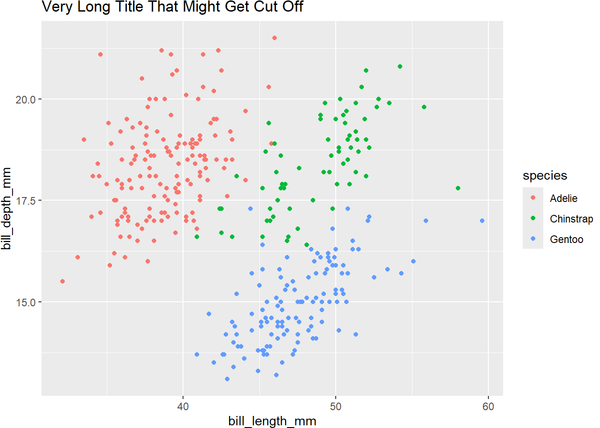
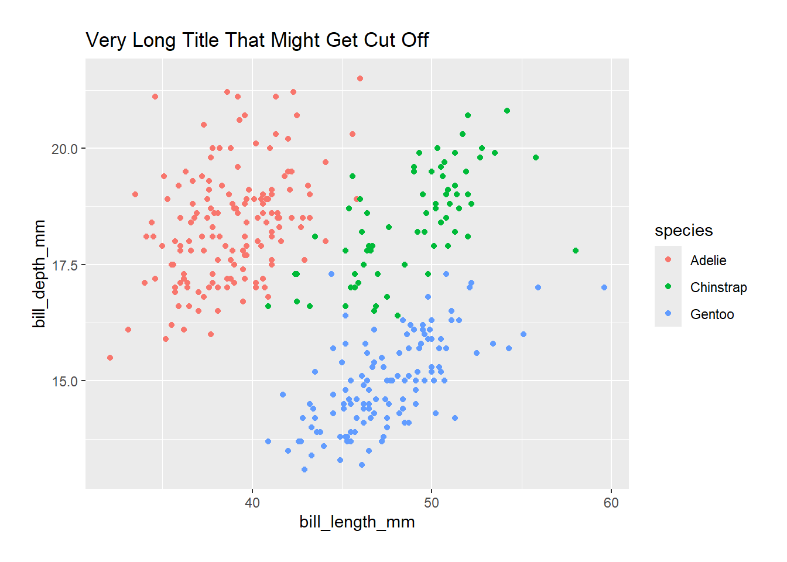
# Problem: Misaligned facet labels
facet_plot <- base_plot +
facet_wrap(~island) +
theme(strip.text = element_text(hjust = 0.5))
# Solution: Proper alignment and spacing
facet_plot_fixed <- base_plot +
facet_wrap(~island) +
theme(
strip.text = element_text(
hjust = 0.5,
margin = margin(5, 0, 5, 0)
),
strip.background = element_rect(
fill = "gray95",
color = "gray80"
)
)
# Compare
facet_plot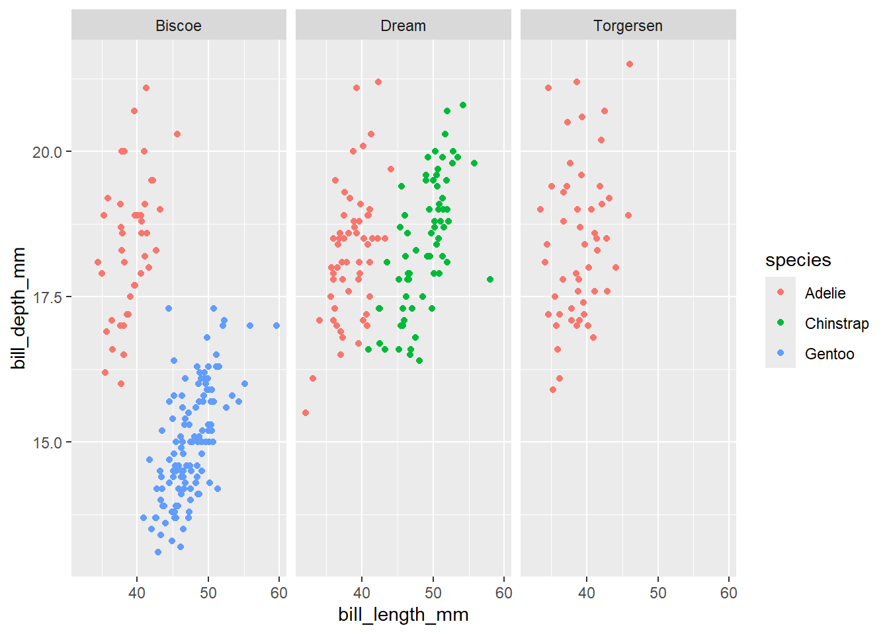
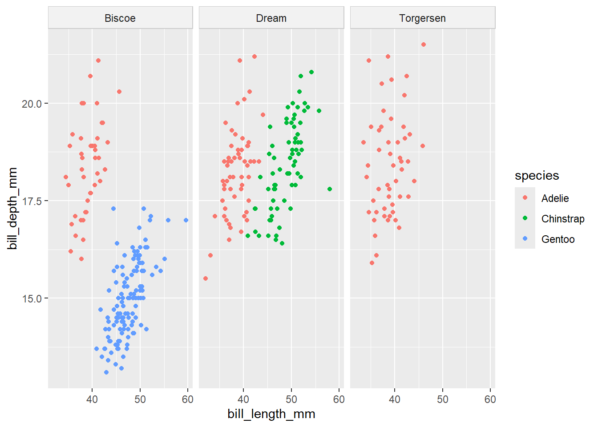
Understanding theme inheritance is crucial:
# Function to create consistent themes
create_company_theme <- function(
base_size = 12,
base_family = "sans",
primary_color = "navy"
) {
theme_minimal(
base_size = base_size,
base_family = base_family
) %+replace%
theme(
plot.title = element_text(
color = primary_color,
size = base_size * 1.3,
face = "bold"
),
axis.title = element_text(
color = primary_color,
size = base_size
)
# Add more elements as needed
)
}
# Usage
base_plot + create_company_theme(primary_color = "darkred")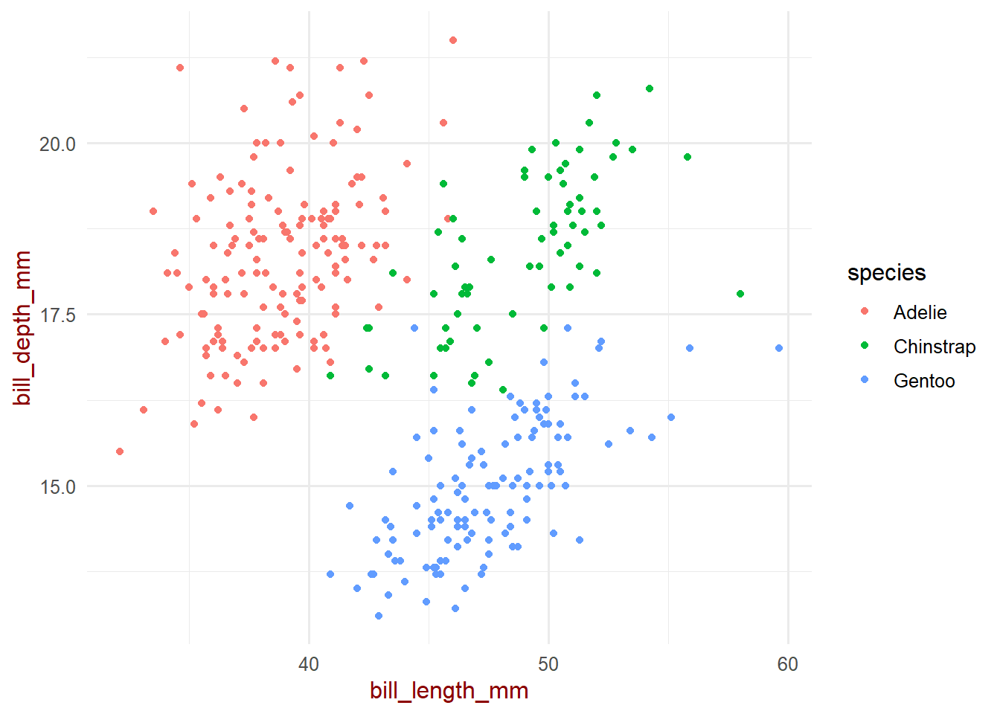
# Create a theme specification
theme_spec <- list(
font_family = "sans",
base_size = 12,
colors = list(
primary = "navy",
secondary = "gray30",
background = "white"
),
margins = list(
plot = margin(20, 20, 20, 20),
title = margin(0, 0, 10, 0)
)
)
# Use the specification
create_theme_from_spec <- function(spec) {
theme_minimal(
base_size = spec$base_size,
base_family = spec$font_family
) %+replace%
theme(
plot.title = element_text(
color = spec$colors$primary,
margin = spec$margins$title
),
plot.margin = spec$margins$plot
)
}theme_minimal(), theme_bw(), etc.)Remember that themes can be: - Applied globally with theme_set() - Saved and loaded between sessions - Modified for specific plot instances - Inherited and overridden as needed